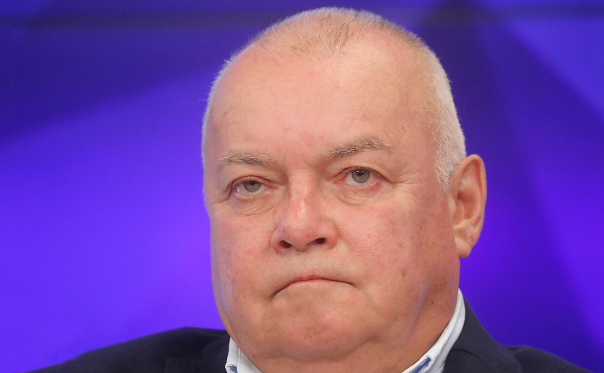

«Россия — единственная страна,
способная превратить США в радиоактивный пепел»

Дмитрий Константинович Киселёв — ведущий «Вестей недели», генеральный директор МИА «Россия сегодня», заместитель гендиректора ВГТРК. В молодости получал гранты Еврокомиссии и работал на украинском телевидении. В зрелости — пообещал превратить США в радиоактивный пепел. Семь браков, дача в Крыму, символ новой эпохи российской пропаганды.
Родился 26 апреля 1954 года в Москве. Мать — Ариадна Николаевна, бригадир секции зрителей во МХАТе. Отец — Константин, тамбовские крестьянские корни, служил в кавалерии. Дед по матери — Несмачный, родом с Западной Украины. Рос в творческой среде: французская спецшкола, музыкальная школа по классу гитары.
До поступления в университет работал медбратом. Окончил филологический факультет Ленинградского государственного университета по редкой специальности — скандинавская филология. Один из первых браков — с однокурсницей Алёной, официальный, распался меньше чем за год. Всего в студенчестве — три официальных брака.
Начал карьеру в Центральном радиовещании на зарубежные страны Гостелерадио СССР — норвежская и польская редакции. Высокая ответственность, жёсткий контроль над каждым словом. С 1988 — ведущий политических обозрений программы «Время». В 1991 году отказался зачитать официальное заявление правительства о событиях в Прибалтике и был уволен.
После увольнения с Гостелерадио приглашён в программу «Вести» — стал одним из создателей нового формата отечественного телевидения. Активное сотрудничество с зарубежными журналистами. В 1995-м — ведущий «Часа пик». Параллельно получал гранты Еврокомиссии на развитие журналистики.
С 2000 по 2004 год — главный редактор информационной службы украинского телеканала ICTV, ведущий программы «Факты» и ежедневного шоу «Подробно с Дмитрием Киселёвым». Работал в стране, которую позже назовёт «виртуальным понятием». В 2005-м вернулся в Россию на «Россию».
В сентябре 2012 года, через несколько месяцев после избрания Путина на третий срок, громко вернулся в регулярный прайм-тайм. В день 60-летия президента посвятил ему 12-минутную хвалебную речь в эфире. Началась новая фаза — программный, системный пропагандист.
В апреле 2012-го (волна поднялась в 2013-м) призвал «зарывать в землю или сжигать» сердца геев. Группа блогеров обратилась в Следственный комитет по ст. 282 УК (экстремизм). В декабре 2013-го Путин назначил его генеральным директором МИА «Россия сегодня» — новой структуры на базе РИА НовостиФакт.
16 марта 2014 года в «Вестях недели» заявил: «Россия — единственная страна в мире, способная превратить США в радиоактивный пепел». Фраза стала мировым мемом. 21 марта ЕС внёс Киселёва в санкционный список как «центральную фигуру государственной пропаганды»Факт. Литва лишила его государственной награды — медали Памяти.
Вошёл в санкционные списки Швейцарии и Канады как «центральная фигура государственной пропаганды». Объявлен персоной нон грата в Молдове. Подал иск в Европейский суд общей юрисдикции (Люксембург), пытаясь оспорить санкции. Суд в его пользу не вынес решения.
После начала вторжения в Украину регулярно возвращался к ядерной риторике. В интервью Би-би-си в 2021-м предупреждал Запад о «новом Карибском кризисе». В 2024-м снова пообещал США «радиоактивный пепел» — в ответ на принятие пакета помощи Украине. Его брат Андрей эмигрировал в США ещё в 1980-е; братья не общаются.
Февраль 2024 — смерть Навального в колонии «Полярный волк». Киселёв в «Вестях недели»: «Западники хотят сделать из него мученика. Не выйдет. Он был предателем при жизни». Тема закрыта за один выпуск. В том же году — в ответ на одобрение американского пакета помощи Украине на $61 млрд — снова произносит формулу «радиоактивного пепла». Ровно десять лет спустя после первого раза в марте 2014-го. Международные аналитики фиксируют: риторика не меняется, но эффект сдерживания снижается — из-за привычки.
Первый персонально санкционированный российский журналист (ЕС, 2014) продолжает работуФакт. Одиннадцать лет под санкциями — ни разу не высказался об этом публично с сожалением. Продолжает вести «Вести недели». По данным «Новой газеты Европа», программа сохраняет аудиторию несмотря на общее падение рейтингов государственного ТВ — за счёт зрителей 55+, для которых воскресные «Вести» остаются главным источником информации.
Киселёв — единственный российский пропагандист, чьи слова буквально разошлись по всему миру в виде мемов. Три цитаты, которые невозможно забыть.
«Россия — единственная в мире страна, которая реально способна превратить США в радиоактивный пепел.»
«Сердца геев в случае автомобильной катастрофы зарывать в землю или сжигать как непригодные для продолжения чьей-либо жизни.»
«Украины нет. Теперь это виртуальное понятие, виртуальная страна.»
«Моя фраза о сжигании сердец — сознательная провокация для затравки полемической программы. Конфликт мнений с элементами шоу был заложен драматургически.»
Биография Киселёва — коллекция противоречий. Скандинавский филолог, ненавидящий Запад. Работавший на украинском ТВ националист. Получавший гранты ЕС будущий объект санкций ЕС.
В 90-е годы активно получал гранты Еврокомиссии на развитие журналистики и сотрудничал с западными коллегами. В 2014-м стал одним из первых российских журналистов, попавших под персональные санкции того же Евросоюза. Путь от получателя грантов до «центральной фигуры государственной пропаганды» — меньше 20 лет.
С 2000 по 2006 год работал главным редактором информационной службы украинского ICTV, вёл ежедневные программы на украинскую аудиторию. Позже публично заявил, что Украина — «виртуальное понятие», «виртуальная страна». Украина внесла его в список персон нон грата.
После скандала с призывом сжигать сердца геев многократно заявлял, что «гомофобом не является». После легализации однополых браков в США поддержал гражданские союзы для ЛГБТ — но «браком это называть нельзя». Логика, понятная только самому Киселёву.
Старший брат Андрей эмигрировал в США ещё в 1980-е — братья не общаются по «личным причинам». При этом племянник Сергей (сын брата), гражданин Германии, принял участие в вооружённом конфликте на востоке Украины на стороне пророссийских формирований, дослужившись до замкомвзвода.
«Центральная фигура государственной пропаганды, поддерживающая развёртывание российских войск на Украине.»
«Он просто повторяет какие-то тезисы. Это не делают журналисты. Наверное, он хороший пропагандист.»
«Прокремлёвский телеведущий-гомофоб назначен главой государственного информационного агентства.»
«Консолидация государственных СМИ в период возросшей онлайн-критики 13-летнего правления Путина.»
«Откровенное проявление ксенофобии. Недопустимо использование национальности как аргумента для критики.»
«В молодости учил не прогибаться, а сам не просто прогнулся — сложился, как перочинный ножик.»
«Превратить США в ядерный пепел даже в Холодную войну избегали говорить!»
«Если сердце гея сжечь — получится радиоактивный пепел.»
«Лояльный сторонник Путина, время от времени выступающий с провокационными заявлениями.»
В отличие от Скабеевой, Киселёв интервью давал охотно — особенно западным изданиям. Темы возвращались к одним и тем же болевым точкам.
Все утверждения в данном досье основаны на открытых публичных источниках. Факты, отмеченные Факт, имеют прямые первичные источники. Отмеченные Интерпр. — авторская интерпретация задокументированных событий.